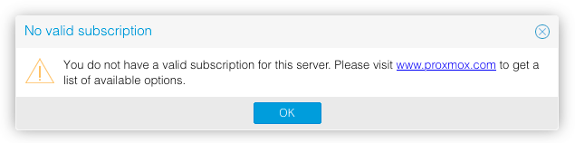

Proxmox VE is an open-source (AGPL v3) virtualization platform for running containers and VMs. It's comparable to a proprietary solution like VMware ESXi.
It can be downloaded and installed completely free of charge, lacking only access to support and other things that more enterprise-focused users care about. For a homelab install, the free version is perfect.
...except for one thing. Each time you log in, you have to click through this dialog:

The goal of this post is to walk through developing a solution to automatically remove that notification in any installed version of Proxmox VE, as well as have that removal survive future updates.
To skip to the solution, click here.
Developing a patch
Searching the internet reveals that a few other people (1, 2, 3) have already attacked
this problem. All articles point to some code in
/usr/share/javascript/proxmox-widget-toolkit/proxmoxlib.js being responsible for the notification
so this is where we'll start.
Scanning though that file reveals a function called checked_command(orig_cmd).
This function just executes orig_cmd after showing the subscription notification if it determines
that you don't have a valid subscription.
Based on this, the goal of this patch will be to make checked_command always execute orig_cmd
without bothering to check if there is a subscription at all. As a bonus, this will also speed up
the login process since it removes a blocking call to the server1.
Since we want this patch to work for as many versions as possible, it's a good idea to take a look
into how this function has changed over time. By looking at the proxmox-widget-toolkit history,
we can see that checked_command was originally added in commit 5f93e010. However, it
was actually moved from the pve-manager project where it was written for the initial
implementation of the subscription notice. By looking at the entire history of this function we can see that
while the function implementation has changed slightly over time, the name, arguments, and goal of
it has stayed exactly the same.
Given this, as long as we only use the function definition to do the patch, it should work for every
version of Proxmox VE to date (and hopefully into the future). Using sed to prepend orig_cmd();
return; to the function should work nicely:
1 | |
This results in the following change:
1 2 | |
Notice that the sed script is looking for the function definition followed by a line ending ($).
Because the patch is added to the same line, if the command is run again it won't match and won't
make any changes, making it safe to blindly run multiple times. This becomes important for
automating it later.
Now that we know it works, we should harden it up against whitespace changes by replacing the spaces
in the regex with \s* (0 or more whitespace characters):
1 | |
The only thing left to solve is which file checked_command is defined in. Since it used to be a
part of the pve-manager project, it's safe to say that it wasn't always stored in
/usr/share/javascript/proxmox-widget-toolkit/proxmoxlib.js. It could also move around in the
future.
To deal with this, we use grep to find the file that it's defined in, then run the previous
command over that file:
1 2 | |
Simply run this command on your Proxmox VE server2, refresh the web UI, and the notice should be gone!
Automating it
At this point we have a working command that will remove the subscription notice from any version of Proxmox VE to date. However, after updating the system, there's a chance that a newer version of the file will have overwritten our patched version.
While we could just save the command in a script and manually run it after every update, that's annoying and will definitely be forgotten. Instead, we want to automatically run the command every time the web server starts. This will ensure that it will always be serving a patched version of the file.
Proxmox VE uses systemd to manage the startup of its services. This means that once we
find the service that manages the web server, we should be able to make systemd launch a service
that applies our patch just before the web server.
The first step is to find the service that manages the web server. Since we know it's running on
port 8006, we can use netstat to enumerate all listening TCP ports and grep to filter it down to
just the port we're interested in:
1 2 | |
Once we know the PID of the program, running systemctl status <PID> will show the status
(including the service name) of the service that's managing it3. In this case it shows that the
service is pveproxy.service.
We can now define a service that runs our code, is wanted by pveproxy.service, and
must be run before it. Then, whenever systemd starts (or restarts) pveproxy.service, it will
make sure to also run our service that applies the patch.
The solution
1. Create /etc/systemd/system/no-subscription-notice.service:
1 2 3 4 5 6 7 8 9 10 | |
2. systemctl enable --now no-subscription-notice.service
And that's it! The subscription notice should now be gone for good. I'll update this post if it breaks, but that hopefully won't be for a while.
-
Interestingly, the existing solutions I found all patch the code that checks the returned subscription status instead of just not asking about the status at all. Compared to the solution here, this is both more fragile, as well as slower. ↩
-
Commands can be run from the web UI (Datacenter -> node -> Shell), via SSH, or just by using a keyboard and monitor hooked up to the server. ↩
-
Another way to go from PID or command to service name is to use
pslike so:ps --format=unit= <PID>orps --format=unit= -C <cmd>. Note that this requires your version ofpsto be compiled withsystemdsupport (which it is in mostsystemd-based distros). ↩